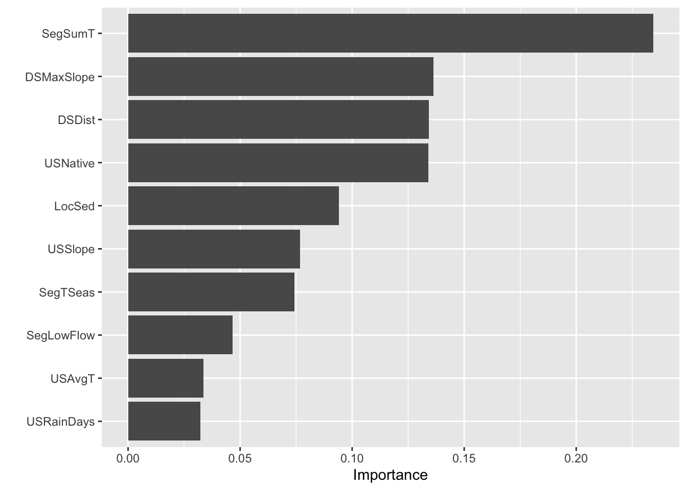

Tuning an XGBoost Machine Learning Model to Predict Eel Presence
“Using a dataset with a variety of physical and atmospheric habitat variables train a boosted tree classification model the predict the presence or absence of the short finned eel”
Master of Environmental Data Science Program at UCSB
Published
February 1, 2023
Case Study: Eel Species Distribution Modeling
This blog post loosely follows the boosted regression tree exercise outlined in the academic paper: “A working guide to boosted regression trees” by Edith et al. We will use the same dataset that they did on the distribution of the short finned eel (Anguilla australis). We will be using the xgboost library, tidymodels, caret, parsnip, vip, and more.
Citation:
Elith, J., Leathwick, J. R., & Hastie, T. (2008). A working guide to boosted regression trees. Journal of Animal Ecology, 77(4), 802–813. https://doi.org/10.1111/j.1365-2656.2008.01390.x
Rows: 1000 Columns: 14
── Column specification ────────────────────────────────────────────────────────
Delimiter: ","
chr (1): Method
dbl (13): Site, Angaus, SegSumT, SegTSeas, SegLowFlow, DSDist, DSMaxSlope, U...
ℹ Use `spec()` to retrieve the full column specification for this data.
ℹ Specify the column types or set `show_col_types = FALSE` to quiet this message.
Split and Resample
Split the joined data from above into a training and test set, stratified by outcome score. Use 10-fold CV to resample the training set, stratified by Angaus
# create initial spliteel_split <-initial_split(data = eel_dat, prop =0.7, strata = Angaus)# create training and testing data from the split eel_train <-training(eel_split) eel_test <-testing(eel_split)# resample the training set eel_folds <-vfold_cv(data = eel_train, v =10,strata = Angaus)
Preprocess
Create a recipe to prepare the data for the XGBoost model. We are interested in predicting the binary outcome variable Angaus which indicates presence or absence of the eel species Anguilla australis
eel_recipe <-recipe(Angaus ~ ., data = eel_train) |>step_integer(all_predictors(), zero_based =TRUE)
Tuning XGBoost
We are going to tune 3 different times to get the ideal hyperparamters in our model. We first tune the learning rate and get the estimation of the best learning rate. Then we take that learning rate and set it as fixed in the next tuning. Next, we tune the three tree paramters: tree_depth, loss_reduction, and min_n. Lastly, we will set those as fixed for the stochastic tuning (m_try).
Tune Learning Rate
Create a model specification using {xgboost} for the estimation
Computational efficiency becomes a factor as models get more complex and data gets larger. Becuase of this, we will be recording the time it takes to run with Sys.time().
Tune the learning rate parameter:
# tune the learning rate:# define a workflow for tuning the learning rate: eel_learn_wf <-workflow() |>add_model(eel_boost_model) |>add_recipe(eel_recipe)# fit to the tuning grid start_time1 <-Sys.time()tune_learn <- eel_learn_wf |>tune_grid( eel_folds, grid = learn_rate_grid )end_time1 <-Sys.time()print(paste("time elapsed:", (end_time1 - start_time1)))
[1] "time elapsed: 5.83796453078588"
Show the performance of the best models and the estimates for the learning rate parameter values associated with each.
show_best(tune_learn, metric ="roc_auc") # using metric roc_auc
Create a new specification where you set the learning rate (which we already optimized) and tune the tree parameters.
# create model specification for tuning tree depth with new (optimized) learning rateeel_boost_model2 <-boost_tree(mode ="classification", trees =3000, engine ="xgboost", tree_depth =tune(),loss_reduction =tune(), learn_rate =0.04146552,min_n =tune(),mtry =NULL )# define workflow for tuning tree parameters: tree_tune_wf <-workflow() |>add_model(eel_boost_model2) |>add_recipe(eel_recipe)
Set up a tuning grid. This time use grid_max_entropy() to get a representative sampling of the parameter space
# we are now tuning the tree parameters: tree_depth(), min_n(), and loss_reduction()# use tidymodels dials package to specify which paramters we are trying to tune... # --- grid_max_entropy() needs an object like this to work properlytree_depth_param <- dials::parameters(tree_depth(), min_n(), loss_reduction())tree_tune_grid <-grid_max_entropy(tree_depth_param, size =60)
Show the performance of the best models and the estimates for the tree parameter values associated with each.
# fit to the tuning grid start_time1 <-Sys.time()tune_tree <- tree_tune_wf |>tune_grid( eel_folds, grid = tree_tune_grid )end_time1 <-Sys.time()print(paste("time elapsed:", (end_time1 - start_time1)))
# best value for min_n: 17# best value for tree_depth: 11# best value for loss_reduction: 0.367
Tune Stochastic Parameters
We will create a new specification where we set the learning rate and tree parameters (which you already optimized) and tune the stochastic parameters (m_try).
# model specification with fixed learning rate and tree parameters to tune stochastic paramseel_boost_model3 <-boost_tree(mode ="classification", trees =3000, engine ="xgboost", tree_depth =11,loss_reduction =0.367, learn_rate =0.04146552,min_n =17,mtry =tune(), sample_size =tune() )# define workflow for tuning stochastic parameters: stoch_tune_wf <-workflow() |>add_model(eel_boost_model3) |>add_recipe(eel_recipe)
Set up a tuning grid using grid_max_entropy() again.
boost_tree_metrics <- final_eel_fit |>collect_metrics()boost_tree_accuracy <- boost_tree_metrics$.estimate[1]print(paste0("the decision tree model accuracy came out to: ", boost_tree_accuracy))
[1] "the decision tree model accuracy came out to: 0.850498338870432"
How well did your model perform? What types of errors did it make?
make a confusion matrix
# to make a confusion matrix we need a table of the predictions vs the true valuesboost_predictions <- final_eel_fit$.predictions[[1]]# make a simple table of just the predictions and actual valuesconfusion_table <- boost_predictions |> dplyr::select(c(.pred_class, Angaus))# create a confusion matrix comparing the predictions with actual observationsconfusionMatrix(data = confusion_table$.pred_class, reference = confusion_table$Angaus)
Confusion Matrix and Statistics
Reference
Prediction 0 1
0 226 31
1 14 30
Accuracy : 0.8505
95% CI : (0.8051, 0.8888)
No Information Rate : 0.7973
P-Value [Acc > NIR] : 0.01109
Kappa : 0.4837
Mcnemar's Test P-Value : 0.01707
Sensitivity : 0.9417
Specificity : 0.4918
Pos Pred Value : 0.8794
Neg Pred Value : 0.6818
Prevalence : 0.7973
Detection Rate : 0.7508
Detection Prevalence : 0.8538
Balanced Accuracy : 0.7167
'Positive' Class : 0
Well, looks like my model did OK. It got an accuracy of 0.8339 which is not too bad… from looking at the confusion matrix, most of the errors that were made were false negative predictions, which were over twice the number of false positive predictions.
Fit the model to the evaluation data and compare performance
Now we will fit the final model to the big dataset used in the paper.
# read in the eval data eval_data <-read_csv("eel.eval.data.csv") |>mutate(Angaus_obs =as.factor(Angaus_obs))
Rows: 500 Columns: 13
── Column specification ────────────────────────────────────────────────────────
Delimiter: ","
chr (1): Method
dbl (12): Angaus_obs, SegSumT, SegTSeas, SegLowFlow, DSDist, DSMaxSlope, USA...
ℹ Use `spec()` to retrieve the full column specification for this data.
ℹ Specify the column types or set `show_col_types = FALSE` to quiet this message.
Warning: No value of `metric` was given; metric 'roc_auc' will be used.
final_model <-finalize_model(eel_boost_final, parameters = best_params)# make predictions with our modeleval_fit <- final_model |>fit(Angaus_obs ~ ., data = eval_data)
How does the model perform on this data?
# generate the predicted outcomes eval_preds <- eval_fit |>predict(new_data = eval_data)eval_pred_probs <- eval_fit |>predict_classprob.model_fit(new_data = eval_data)joined_predictions <-bind_cols(eval_data, eval_preds, eval_pred_probs)# assess model performance with a confusion matrix confusionMatrix(data = joined_predictions$.pred_class, reference = joined_predictions$Angaus_obs)
Confusion Matrix and Statistics
Reference
Prediction 0 1
0 374 57
1 19 50
Accuracy : 0.848
95% CI : (0.8135, 0.8783)
No Information Rate : 0.786
P-Value [Acc > NIR] : 0.0002819
Kappa : 0.4811
Mcnemar's Test P-Value : 2.194e-05
Sensitivity : 0.9517
Specificity : 0.4673
Pos Pred Value : 0.8677
Neg Pred Value : 0.7246
Prevalence : 0.7860
Detection Rate : 0.7480
Detection Prevalence : 0.8620
Balanced Accuracy : 0.7095
'Positive' Class : 0
Woohoo! we got an even better accuracy than with the testing data that we fit the model to!Accuracy was 84.4% Still over twice as many false negative errors than false positive ones
How do our results compare to those of Elith et al.?
As for variable importance, I got just about the same results for the most important predictors being: summer air temp, distance to coast, native vegetation, downstream max slope… execpt, in the paper one of the most important was the fishing method… which didn’t pop up for me which I thought was interesting. The roc area under the curve that the scientists from the paper acheived was 0.858, which was slightly higher than mine… dang! But at least it was really close.
Variable Importance
Using the package {vip} to compare variable importance. This is really cool because we can see which variables influenced the model the most once it is finalized.
# create a plot of variable importancevip(eval_fit)

Discussion
What do our variable importance results tell us about the distribution of this eel species?
Summer air temperature is very important to this species because it was the most influential variable in the model. Maybe some part of their breeding or other important stage of their life cycle occurs in summer. From the code I wrote below, it seems like they like warmer temperatures on average in the summer.
Their distance to the coast is also very important in determining the prescence of this eel species. The average distance for the dataset while the eel is present is HALF of that with the eel absent, so I’m thinking that the eel likes to be closer to the coast rather than farther. Maybe this is because they are anadromous in some way or need brackish water for part of their life cycle.
The species also seems to be heavily influence in the amount of native forest that the particular habitat contains… no surprise there!
The species also seems to like areas with more gently sloped downstream areas, which to me suggests that they somewhat rely on being able to travel up and downstream…
# make a little subset dataframe for just the places that the eel was presenteel_pres <- eel_dat |>filter(Angaus ==1)eel_abs <- eel_dat |>filter(Angaus ==0)# find out what summer temperature they like mean(eel_pres$SegSumT) # = 17.8005
[1] 17.8005
mean(eel_abs$SegSumT) # = 16.8005
[1] 16.07343
# find out if they like to be closer or farther from the coastmean(eel_pres$DSDist) # = 42.47604
[1] 42.47604
mean(eel_abs$DSDist) # = 82.60588
[1] 82.60588
# find out whether they like steeper slope or shallower slope mean(eel_pres$DSMaxSlope) # = 1.544